Practise real customer calls with an AI customer and a coach that tells you, line by line, how to do better.
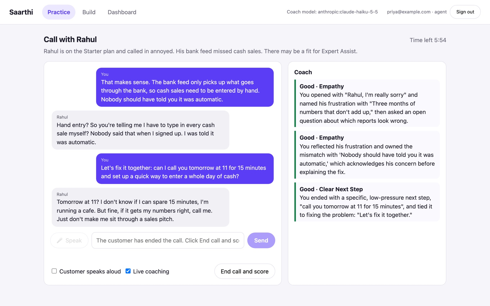
Sales and support people learn by talking to customers. Saarthi lets them practise those conversations safely, as often as they like, and get honest coaching after every reply instead of waiting for a manager to listen in.
Each customer has a personality, a mood and hidden worries they only raise if you ask the right questions. They react to what you actually say, and can speak with a natural human voice.
After each thing you say, the coach names one behaviour (good, mixed or needs work), quotes your words, and suggests a better line.
One overall score, the team's quality markers, what went well, what to work on, questions to prepare for, and a better version of each line you said.
A dashboard tracks scores and speaking habits over time, keeps a practice streak, and gives managers a team view.
| Feature | Admin (the trainer) | Agent (everyone who practises) |
|---|---|---|
| Practice calls, tutor, scorecards | Yes | Yes |
| Build your own roleplays and personas | Yes | Yes, private to them |
| Publish a roleplay to everyone | Yes | No |
| See calls | Everyone's | Only their own |
| Dashboard | Own trends plus a team table | Own trends |
| Setup: product facts, quality markers, who joined | Yes | Hidden |
The Practice tab lists the customers you can call. Each card says who they are, how hard the call is, and what you know before you dial.
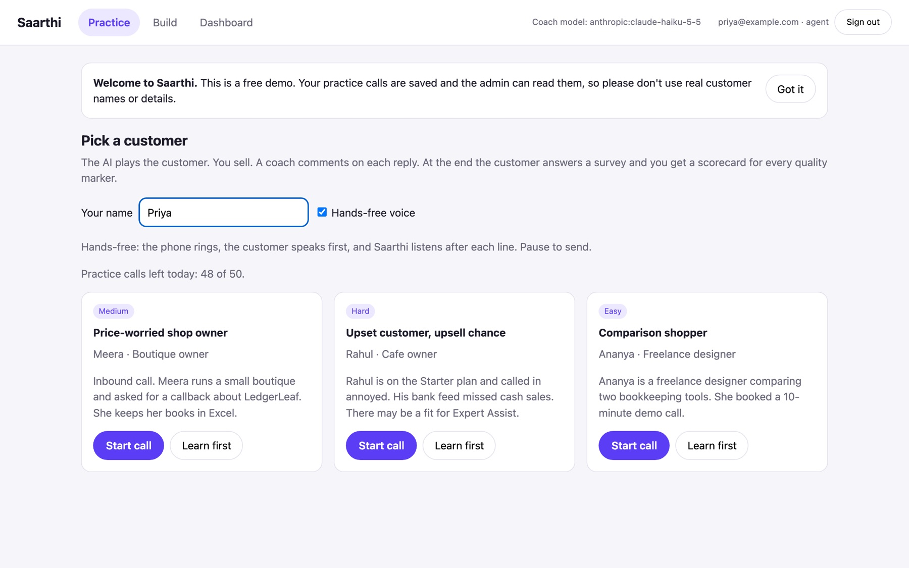
It works like a phone call. The customer speaks first, you answer, they react, and a coach comments quietly on the right.
Type in the box and press Send. You can switch between talking and typing at any point.
Press End call and score. Scoring takes 15 to 30 seconds while the coach scores the call and the customer fills in a survey, in character.
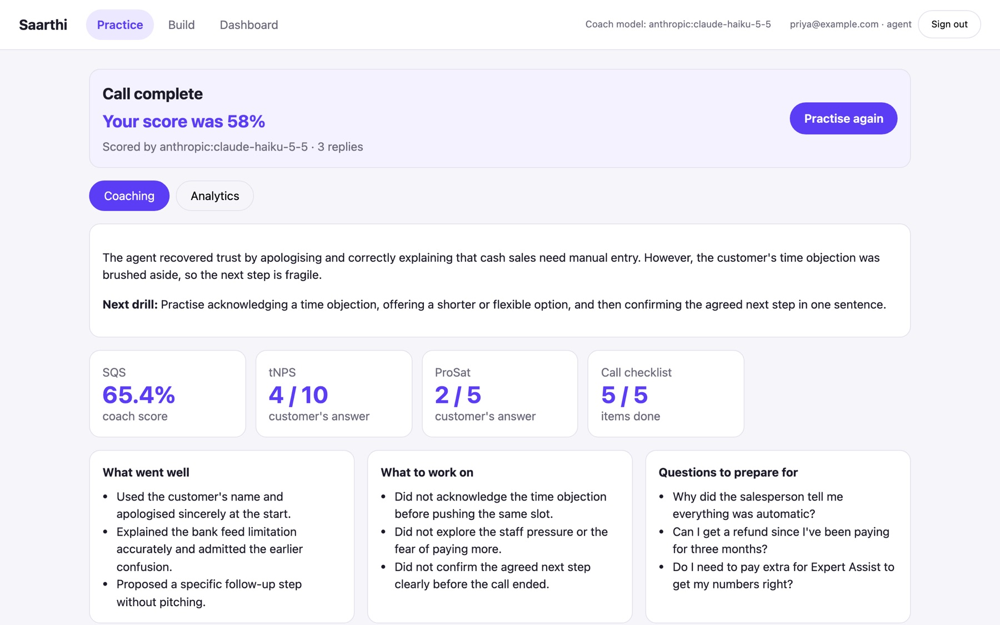
| What you see | What it means |
|---|---|
| Your score | One number for the call: the average of all the markers below. |
| SQS | Sales Quality Score. The coach scores behaviours like empathy, discovery, honesty and a clear next step, 1 to 5 each, with your own words as evidence. |
| tNPS and ProSat | The customer's own survey answers: would they recommend us (0 to 10), and how satisfied they are with the product (1 to 5). Each comes with their reason, in their words. |
| Call checklist | Must-do items, such as greeting by name and making no false promises. Red means a critical item was missed. |
| Next drill | The one thing to practise in your next call. |
| Questions to prepare for | What this customer is likely to ask next time. |
At the bottom of the Coaching tab, the transcript shows a better version under each line that needed one.
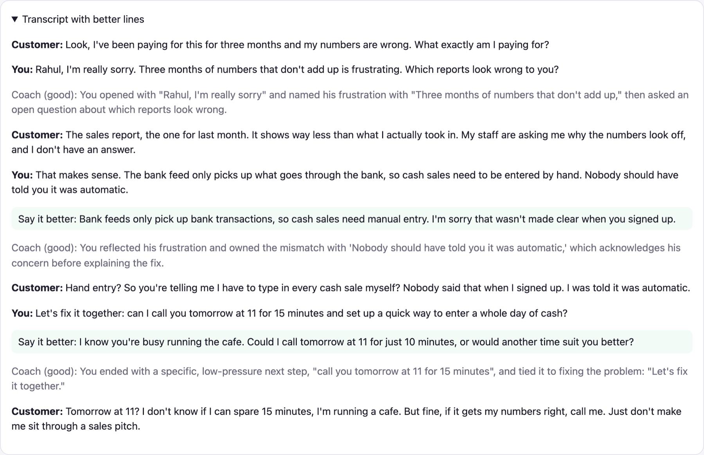
Switch to Analytics for your speaking habits. These are counted from the transcript, so they are instant and cost nothing.
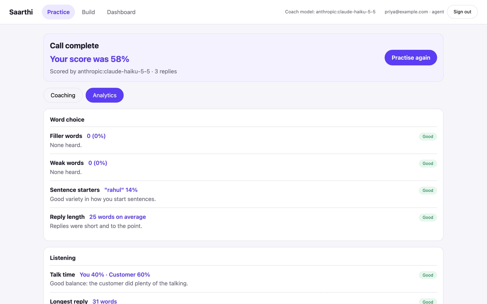
Practise the exact conversations your team faces. Describe the customer in a sentence and the AI drafts the whole roleplay, or start from a template.
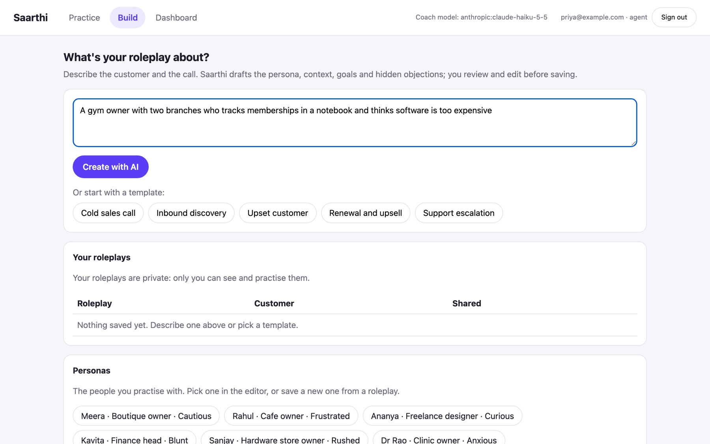
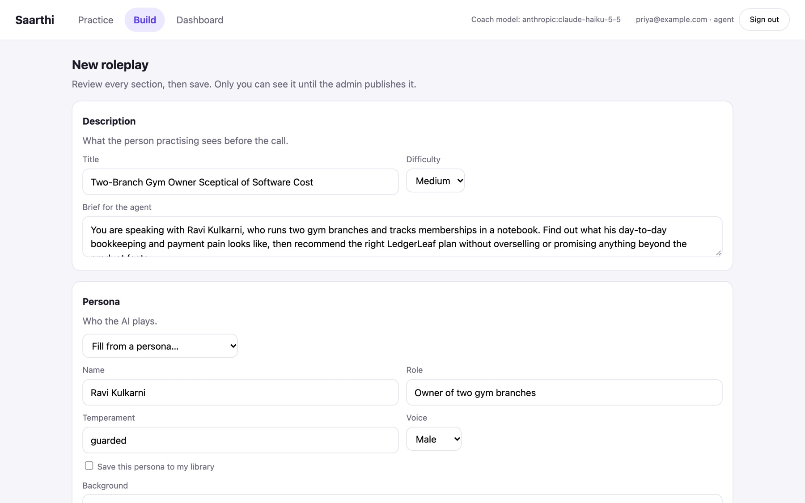
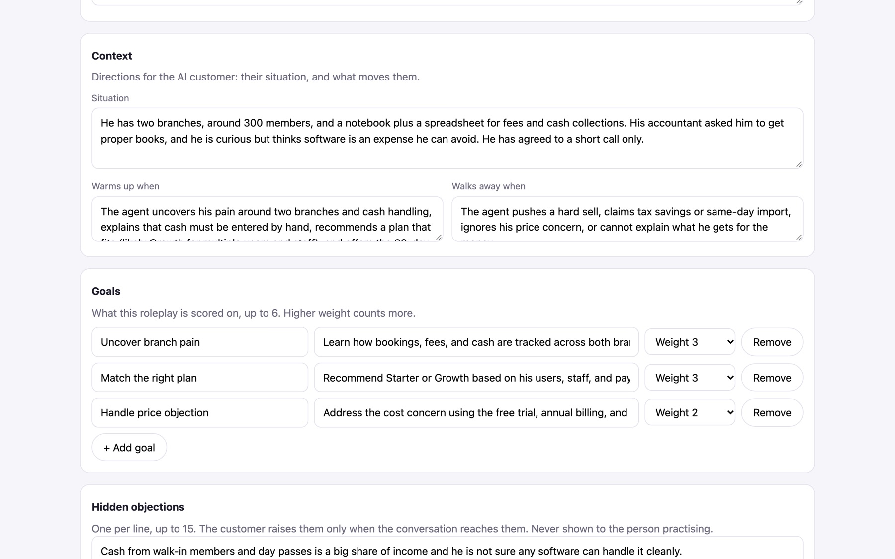
| Section | What to check |
|---|---|
| Description | The title, difficulty, and the brief the person practising will read. |
| Persona | Who the AI plays: name, role, temperament and voice. Pick one from the library to fill it in, or tick "Save this persona" to reuse it. |
| Context | The customer's situation, what warms them up, and what makes them walk away. |
| Goals | Up to 6 things this roleplay is scored on. Higher weight counts more. They appear as a "Roleplay goals" score on the scorecard. |
| Hidden objections | Worries the customer only raises when the conversation gets there. Never shown to the person practising. |
| Conversation | The customer's first words and the time limit. |
Press Learn first on any customer card. The tutor teaches the product facts that matter for that call, then asks three questions the customer may ask.
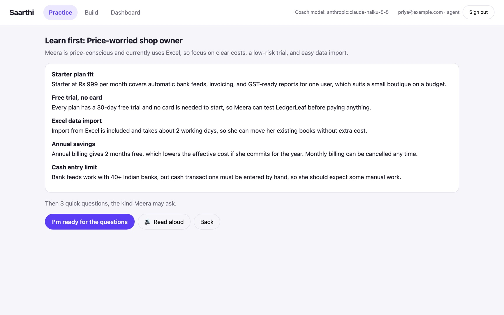
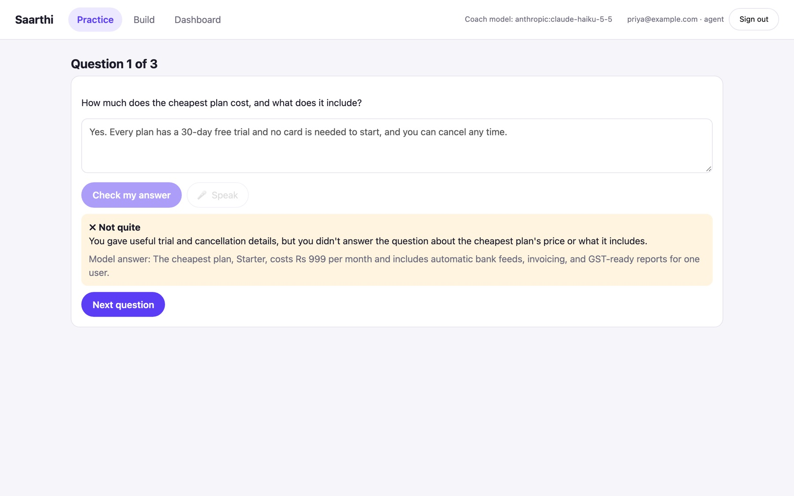
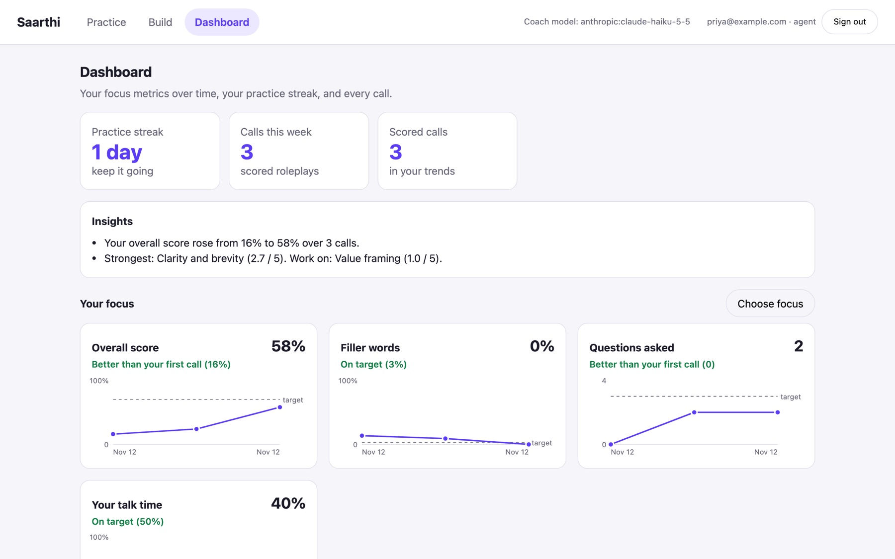
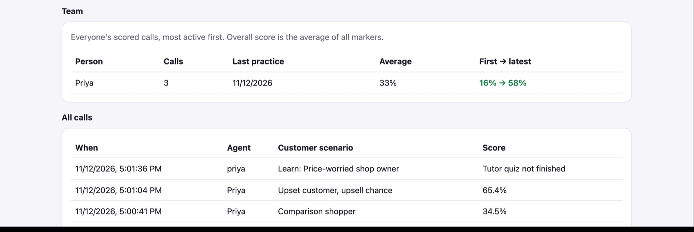
Each person's calls, last practice, average score, and first-to-latest score (green when improving). All calls are listed below; click one to open its scorecard.
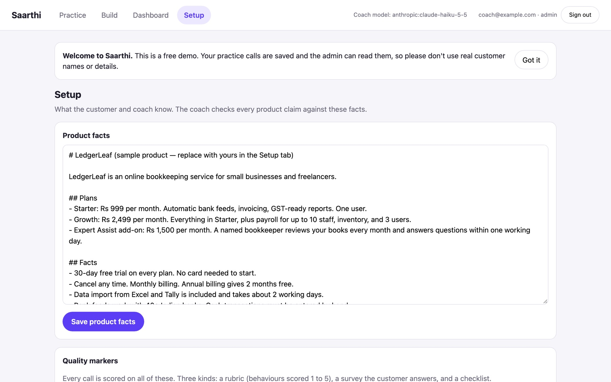
| Setting | What it does |
|---|---|
| Product facts | The only truth the AI uses about your product: plans, prices, policies, and things never to promise. The coach checks every claim against it. Paste your own to make Saarthi about your product. |
| Quality markers | What every call is scored on. Add your own: a checklist (start a line with ! to make it critical), a rubric of behaviours, or a survey question the customer answers. |
| People who joined | Everyone who has signed in, with first and last visit. |
Share your screen in Chrome and open saarthi-staging.onrender.com a minute early: free hosting sleeps when idle and takes about a minute to wake.
| Time | Do | Say |
|---|---|---|
| 0:00 | Practice tab | "This is where a new hire practises. Each AI customer has a personality and hidden worries." |
| 1:00 | Start "Upset customer" | "Listen: the customer calls in, angry. I'll answer like a rep would." |
| 1:30 | Reply 2 or 3 times; point at the coach | "After every line, the coach tells me what was good and what to say instead." |
| 3:30 | End call and score | "The customer now answers our real survey questions, tNPS and ProSat, in character." |
| 4:00 | Scorecard and Analytics | "One score, every marker, a better version of each line, and speaking habits." |
| 5:30 | Build → Create with AI | "Any manager can create a new scenario from one sentence, in seconds." |
| 7:00 | Learn first on a card | "Before the call, a tutor teaches the facts and checks understanding." |
| 8:30 | Dashboard | "Progress over time, a streak, and a team view for managers." |
| 9:30 | Close | "It costs about a third of a US cent a call, and it works for sales, support and onboarding." |
| Roleplay | A practice scenario: who the customer is, their situation, goals and hidden objections. |
| Persona | The person the AI plays: name, role, temperament, voice. |
| Marker | Something every call is scored on (SQS, tNPS, ProSat, checklist, or your own). |
| SQS | Sales Quality Score: behaviours scored by the coach. |
| tNPS | Transactional Net Promoter Score: "would you recommend us?", answered by the customer. |
| ProSat | Product satisfaction, answered by the customer. |
| Hidden objection | A worry the customer won't mention unless you ask the right question. |